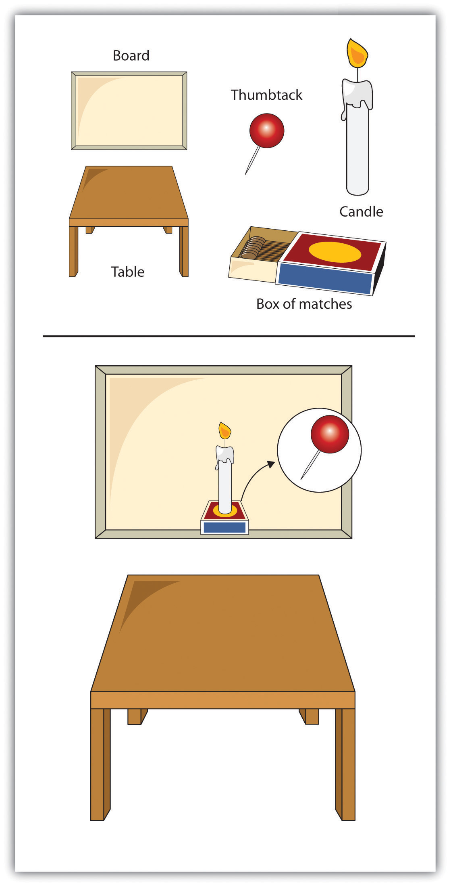
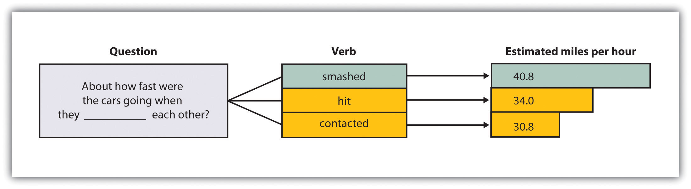
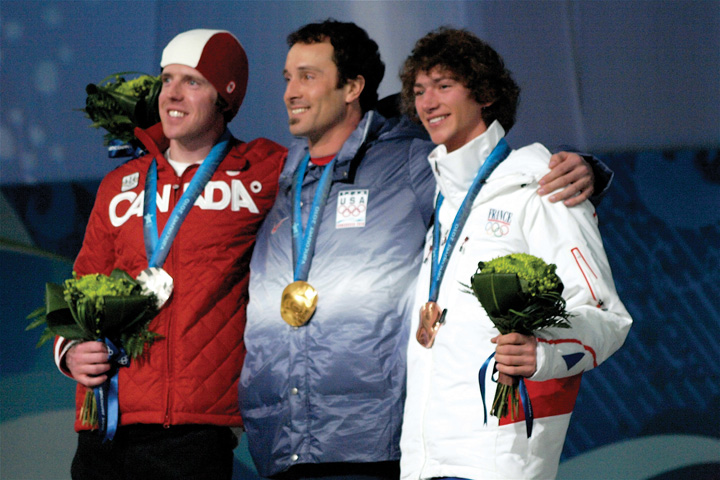

As we have seen, our memories are not perfect. They fail in part due to our inadequate encoding and storage, and in part due to our inability to accurately retrieve stored information. But memory is also influenced by the setting in which it occurs, by the events that occur to us after we have experienced an event, and by the cognitive processes that we use to help us remember. Although our cognition allows us to attend to, rehearse, and organize information, cognition may also lead to distortions and errors in our judgments and our behaviors.
In this section we consider some of the cognitive biases that are known to influence humans. Cognitive biasesErrors in memory or judgment that are caused by the inappropriate use of cognitive processes. are errors in memory or judgment that are caused by the inappropriate use of cognitive processes (Table 8.3 "Cognitive Processes That Pose Threats to Accuracy"). The study of cognitive biases is important both because it relates to the important psychological theme of accuracy versus inaccuracy in perception, and because being aware of the types of errors that we may make can help us avoid them and therefore improve our decision-making skills.
Table 8.3 Cognitive Processes That Pose Threats to Accuracy
| Cognitive process | Description | Potential threat to accuracy |
|---|---|---|
| Source monitoring | The ability to accurately identify the source of a memory | Uncertainty about the source of a memory may lead to mistaken judgments. |
| Confirmation bias | The tendency to verify and confirm our existing memories rather than to challenge and disconfirm them | Once beliefs become established, they become self-perpetuating and difficult to change. |
| Functional fixedness | When schemas prevent us from seeing and using information in new and nontraditional ways | Creativity may be impaired by the overuse of traditional, expectancy-based thinking. |
| Misinformation effect | Errors in memory that occur when new but incorrect information influences existing accurate memories | Eyewitnesses who are questioned by the police may change their memories of what they observed at the crime scene. |
| Overconfidence | When we are more certain that our memories and judgments are accurate than we should be | Eyewitnesses may be very confident that they have accurately identified a suspect, even though their memories are incorrect. |
| Salience | When some stimuli, (e.g., those that are colorful, moving, or unexpected) grab our attention and make them more likely to be remembered | We may base our judgments on a single salient event while we ignore hundreds of other equally informative events that we do not see. |
| Representativeness heuristic | Tendency to make judgments according to how well the event matches our expectations | After a coin has come up “heads” many times in a row, we may erroneously think that the next flip is more likely to be “tails” (the gambler’s fallacy). |
| Availability heuristic | Idea that things that come to mind easily are seen as more common | We may overestimate the crime statistics in our own area, because these crimes are so easy to recall. |
| Cognitive accessibility | Idea that some memories are more highly activated than others | We may think that we contributed more to a project than we really did because it is so easy to remember our own contributions. |
| Counterfactual thinking | When we “replay” events such that they turn out differently (especially when only minor changes in the events leading up to them make a difference) | We may feel particularly bad about events that might not have occurred if only a small change had occurred before them. |
One potential error in memory involves mistakes in differentiating the sources of information. Source monitoringThe ability to accurately identify the source of a memory. refers to the ability to accurately identify the source of a memory. Perhaps you’ve had the experience of wondering whether you really experienced an event or only dreamed or imagined it. If so, you wouldn’t be alone. Rassin, Merkelbach, and Spaan (2001)Rassin, E., Merckelbach, H., & Spaan, V. (2001). When dreams become a royal road to confusion: Realistic dreams, dissociation, and fantasy proneness. Journal of Nervous and Mental Disease, 189(7), 478–481. reported that up to 25% of college students reported being confused about real versus dreamed events. Studies suggest that people who are fantasy-prone are more likely to experience source monitoring errors (Winograd, Peluso, & Glover, 1998),Winograd, E., Peluso, J. P., & Glover, T. A. (1998). Individual differences in susceptibility to memory illusions. Applied Cognitive Psychology, 12(Spec. Issue), S5–S27. and such errors also occur more often for both children and the elderly than for adolescents and younger adults (Jacoby & Rhodes, 2006).Jacoby, L. L., & Rhodes, M. G. (2006). False remembering in the aged. Current Directions in Psychological Science, 15(2), 49–53.
In other cases we may be sure that we remembered the information from real life but be uncertain about exactly where we heard it. Imagine that you read a news story in a tabloid magazine such as the National Enquirer. Probably you would have discounted the information because you know that its source is unreliable. But what if later you were to remember the story but forget the source of the information? If this happens, you might become convinced that the news story is true because you forget to discount it. The sleeper effectAttitude change that occurs over time when we forget the source of information. refers to attitude change that occurs over time when we forget the source of information (Pratkanis, Greenwald, Leippe, & Baumgardner, 1988).Pratkanis, A. R., Greenwald, A. G., Leippe, M. R., & Baumgardner, M. H. (1988). In search of reliable persuasion effects: III. The sleeper effect is dead: Long live the sleeper effect. Journal of Personality and Social Psychology, 54(2), 203–218.
In still other cases we may forget where we learned information and mistakenly assume that we created the memory ourselves. Kaavya Viswanathan, the author of the book How Opal Mehta Got Kissed, Got Wild, and Got a Life, was accused of plagiarism when it was revealed that many parts of her book were very similar to passages from other material. Viswanathan argued that she had simply forgotten that she had read the other works, mistakenly assuming she had made up the material herself. And the musician George Harrison claimed that he was unaware that the melody of his song “My Sweet Lord” was almost identical to an earlier song by another composer. The judge in the copyright suit that followed ruled that Harrison didn’t intentionally commit the plagiarism. (Please use this knowledge to become extra vigilant about source attributions in your written work, not to try to excuse yourself if you are accused of plagiarism.)
We have seen that schemas help us remember information by organizing material into coherent representations. However, although schemas can improve our memories, they may also lead to cognitive biases. Using schemas may lead us to falsely remember things that never happened to us and to distort or misremember things that did. For one, schemas lead to the confirmation biasA cognitive bias that results in the tendency to verify and confirm our existing memories rather than to challenge and disconfirm them., which is the tendency to verify and confirm our existing memories rather than to challenge and disconfirm them. The confirmation bias occurs because once we have schemas, they influence how we seek out and interpret new information. The confirmation bias leads us to remember information that fits our schemas better than we remember information that disconfirms them (Stangor & McMillan, 1992),Stangor, C., & McMillan, D. (1992). Memory for expectancy-congruent and expectancy-incongruent information: A review of the social and social developmental literatures. Psychological Bulletin, 111(1), 42–61. a process that makes our stereotypes very difficult to change. And we ask questions in ways that confirm our schemas (Trope & Thompson, 1997).Trope, Y., & Thompson, E. (1997). Looking for truth in all the wrong places? Asymmetric search of individuating information about stereotyped group members. Journal of Personality and Social Psychology, 73, 229–241. If we think that a person is an extrovert, we might ask her about ways that she likes to have fun, thereby making it more likely that we will confirm our beliefs. In short, once we begin to believe in something—for instance, a stereotype about a group of people—it becomes very difficult to later convince us that these beliefs are not true; the beliefs become self-confirming.
Darley and Gross (1983)Darley, J. M., & Gross, P. H. (1983). A hypothesis-confirming bias in labeling effects. Journal of Personality and Social Psychology, 44, 20–33. demonstrated how schemas about social class could influence memory. In their research they gave participants a picture and some information about a fourth-grade girl named Hannah. To activate a schema about her social class, Hannah was pictured sitting in front of a nice suburban house for one-half of the participants and pictured in front of an impoverished house in an urban area for the other half. Then the participants watched a video that showed Hannah taking an intelligence test. As the test went on, Hannah got some of the questions right and some of them wrong, but the number of correct and incorrect answers was the same in both conditions. Then the participants were asked to remember how many questions Hannah got right and wrong. Demonstrating that stereotypes had influenced memory, the participants who thought that Hannah had come from an upper-class background remembered that she had gotten more correct answers than those who thought she was from a lower-class background.
Our reliance on schemas can also make it more difficult for us to “think outside the box.” Peter Wason (1960)Wason, P. (1960). On the failure to eliminate hypotheses in a conceptual task. The Quarterly Journal of Experimental Psychology, 12(3), 129–140. asked college students to determine the rule that was used to generate the numbers 2-4-6 by asking them to generate possible sequences and then telling them if those numbers followed the rule. The first guess that students made was usually “consecutive ascending even numbers,” and they then asked questions designed to confirm their hypothesis (“Does 102-104-106 fit?” “What about 404-406-408?”). Upon receiving information that those guesses did fit the rule, the students stated that the rule was “consecutive ascending even numbers.” But the students’ use of the confirmation bias led them to ask only about instances that confirmed their hypothesis, and not about those that would disconfirm it. They never bothered to ask whether 1-2-3 or 3-11-200 would fit, and if they had they would have learned that the rule was not “consecutive ascending even numbers,” but simply “any three ascending numbers.” Again, you can see that once we have a schema (in this case a hypothesis), we continually retrieve that schema from memory rather than other relevant ones, leading us to act in ways that tend to confirm our beliefs.
Functional fixednessA cognitive bias that occurs when people’s schemas prevent them from using an object in new and nontraditional ways. occurs when people’s schemas prevent them from using an object in new and nontraditional ways. Duncker (1945)Duncker, K. (1945). On problem-solving. Psychological Monographs, 58, 5. gave participants a candle, a box of thumbtacks, and a book of matches, and asked them to attach the candle to the wall so that it did not drip onto the table below (Figure 8.19 "Functional Fixedness"). Few of the participants realized that the box could be tacked to the wall and used as a platform to hold the candle. The problem again is that our existing memories are powerful, and they bias the way we think about new information. Because the participants were “fixated” on the box’s normal function of holding thumbtacks, they could not see its alternative use.
Figure 8.19 Functional Fixedness
In the candle-tack-box problem, functional fixedness may lead us to see the box only as a box and not as a potential candleholder.
A particular problem for eyewitnesses such as Jennifer Thompson is that our memories are often influenced by the things that occur to us after we have learned the information (Erdmann, Volbert, & Böhm, 2004; Loftus, 1979; Zaragoza, Belli, & Payment, 2007).Erdmann, K., Volbert, R., & Böhm, C. (2004). Children report suggested events even when interviewed in a non-suggestive manner: What are its implications for credibility assessment? Applied Cognitive Psychology, 18(5), 589–611; Loftus, E. F. (1979). The malleability of human memory. American Scientist, 67(3), 312–320; Zaragoza, M. S., Belli, R. F., & Payment, K. E. (2007). Misinformation effects and the suggestibility of eyewitness memory. In M. Garry & H. Hayne (Eds.), Do justice and let the sky fall: Elizabeth Loftus and her contributions to science, law, and academic freedom (pp. 35–63). Mahwah, NJ: Lawrence Erlbaum Associates. This new information can distort our original memories such that the we are no longer sure what is the real information and what was provided later. The misinformation effectErrors in memory that occur when new information influences existing memories. refers to errors in memory that occur when new information influences existing memories.
In an experiment by Loftus and Palmer (1974),Loftus, E. F., & Palmer, J. C. (1974). Reconstruction of automobile destruction: An example of the interaction between language and memory. Journal of Verbal Learning & Verbal Behavior, 13(5), 585–589. participants viewed a film of a traffic accident and then, according to random assignment to experimental conditions, answered one of three questions:
| “About how fast were the cars going when they hit each other?” | |
| “About how fast were the cars going when they smashed each other?” | |
| “About how fast were the cars going when they contacted each other?” |
As you can see in Figure 8.20 "Misinformation Effect", although all the participants saw the same accident, their estimates of the cars’ speed varied by condition. Participants who had been asked about the cars “smashing” each other estimated the highest average speed, and those who had been asked the “contacted” question estimated the lowest average speed.
Figure 8.20 Misinformation Effect
Participants viewed a film of a traffic accident and then answered a question about the accident. According to random assignment, the verb in the question was filled by either “hit,” “smashed,” or “contacted” each other. The wording of the question influenced the participants’ memory of the accident.
Source: Adapted from Loftus, E. F., & Palmer, J. C. (1974). Reconstruction of automobile destruction: An example of the interaction between language and memory. Journal of Verbal Learning & Verbal Behavior, 13(5), 585–589.
In addition to distorting our memories for events that have actually occurred, misinformation may lead us to falsely remember information that never occurred. Loftus and her colleagues asked parents to provide them with descriptions of events that did (e.g., moving to a new house) and did not (e.g., being lost in a shopping mall) happen to their children. Then (without telling the children which events were real or made-up) the researchers asked the children to imagine both types of events. The children were instructed to “think real hard” about whether the events had occurred (Ceci, Huffman, Smith, & Loftus, 1994).Ceci, S. J., Huffman, M. L. C., Smith, E., & Loftus, E. F. (1994). Repeatedly thinking about a non-event: Source misattributions among preschoolers. Consciousness and Cognition: An International Journal, 3(3–4), 388–407. More than half of the children generated stories regarding at least one of the made-up events, and they remained insistent that the events did in fact occur even when told by the researcher that they could not possibly have occurred (Loftus & Pickrell, 1995).Loftus, E. F., & Pickrell, J. E. (1995). The formation of false memories. Psychiatric Annals, 25(12), 720–725. Even college students are susceptible to manipulations that make events that did not actually occur seem as if they did (Mazzoni, Loftus, & Kirsch, 2001).Mazzoni, G. A. L., Loftus, E. F., & Kirsch, I. (2001). Changing beliefs about implausible autobiographical events: A little plausibility goes a long way. Journal of Experimental Psychology: Applied, 7(1), 51–59.
The ease with which memories can be created or implanted is particularly problematic when the events to be recalled have important consequences. Therapists often argue that patients may repress memories of traumatic events they experienced as children, such as childhood sexual abuse, and then recover the events years later as the therapist leads them to recall the information—for instance, by using dream interpretation and hypnosis (Brown, Scheflin, & Hammond, 1998).Brown, D., Scheflin, A. W., & Hammond, D. C. (1998). Memory, trauma treatment, and the law. New York, NY: Norton.
But other researchers argue that painful memories such as sexual abuse are usually very well remembered, that few memories are actually repressed, and that even if they are it is virtually impossible for patients to accurately retrieve them years later (McNally, Bryant, & Ehlers, 2003; Pope, Poliakoff, Parker, Boynes, & Hudson, 2007).McNally, R. J., Bryant, R. A., & Ehlers, A. (2003). Does early psychological intervention promote recovery from posttraumatic stress? Psychological Science in the Public Interest, 4(2), 45–79; Pope, H. G., Jr., Poliakoff, M. B., Parker, M. P., Boynes, M., & Hudson, J. I. (2007). Is dissociative amnesia a culture-bound syndrome? Findings from a survey of historical literature. Psychological Medicine: A Journal of Research in Psychiatry and the Allied Sciences, 37(2), 225–233. These researchers have argued that the procedures used by the therapists to “retrieve” the memories are more likely to actually implant false memories, leading the patients to erroneously recall events that did not actually occur. Because hundreds of people have been accused, and even imprisoned, on the basis of claims about “recovered memory” of child sexual abuse, the accuracy of these memories has important societal implications. Many psychologists now believe that most of these claims of recovered memories are due to implanted, rather than real, memories (Loftus & Ketcham, 1994).Loftus, E. F., & Ketcham, K. (1994). The myth of repressed memory: False memories and allegations of sexual abuse (1st ed.). New York, NY: St. Martin’s Press.
One of the most remarkable aspects of Jennifer Thompson’s mistaken identity of Ronald Cotton was her certainty. But research reveals a pervasive cognitive bias toward overconfidenceA cognitive bias that involves the tendency for people to be too certain about their ability to accurately remember events and to make judgments., which is the tendency for people to be too certain about their ability to accurately remember events and to make judgments. David Dunning and his colleagues (Dunning, Griffin, Milojkovic, & Ross, 1990)Dunning, D., Griffin, D. W., Milojkovic, J. D., & Ross, L. (1990). The overconfidence effect in social prediction. Journal of Personality and Social Psychology, 58(4), 568–581. asked college students to predict how another student would react in various situations. Some participants made predictions about a fellow student whom they had just met and interviewed, and others made predictions about their roommates whom they knew very well. In both cases, participants reported their confidence in each prediction, and accuracy was determined by the responses of the people themselves. The results were clear: Regardless of whether they judged a stranger or a roommate, the participants consistently overestimated the accuracy of their own predictions.
Eyewitnesses to crimes are also frequently overconfident in their memories, and there is only a small correlation between how accurate and how confident an eyewitness is. The witness who claims to be absolutely certain about his or her identification (e.g., Jennifer Thompson) is not much more likely to be accurate than one who appears much less sure, making it almost impossible to determine whether a particular witness is accurate or not (Wells & Olson, 2003).Wells, G. L., & Olson, E. A. (2003). Eyewitness testimony. Annual Review of Psychology, 277–295.
I am sure that you have a clear memory of when you first heard about the 9/11 attacks in 2001, and perhaps also when you heard that Princess Diana was killed in 1997 or when the verdict of the O. J. Simpson trial was announced in 1995. This type of memory, which we experience along with a great deal of emotion, is known as a flashbulb memoryA vivid and emotional memory of an unusual event that people believe they remember very well.—a vivid and emotional memory of an unusual event that people believe they remember very well. (Brown & Kulik, 1977).Brown, R., & Kulik, J. (1977). Flashbulb memories. Cognition, 5, 73–98.
People are very certain of their memories of these important events, and frequently overconfident. Talarico and Rubin (2003)Talarico, J. M., & Rubin, D. C. (2003). Confidence, not consistency, characterizes flashbulb memories. Psychological Science, 14(5), 455–461. tested the accuracy of flashbulb memories by asking students to write down their memory of how they had heard the news about either the September 11, 2001, terrorist attacks or about an everyday event that had occurred to them during the same time frame. These recordings were made on September 12, 2001. Then the participants were asked again, either 1, 6, or 32 weeks later, to recall their memories. The participants became less accurate in their recollections of both the emotional event and the everyday events over time. But the participants’ confidence in the accuracy of their memory of learning about the attacks did not decline over time. After 32 weeks the participants were overconfident; they were much more certain about the accuracy of their flashbulb memories than they should have been. Schmolck, Buffalo, and Squire (2000)Schmolck, H., Buffalo, E. A., & Squire, L. R. (2000). Memory distortions develop over time: Recollections of the O. J. Simpson trial verdict after 15 and 32 months. Psychological Science, 11(1), 39–45. found similar distortions in memories of news about the verdict in the O. J. Simpson trial.
Another way that our information processing may be biased occurs when we use heuristicsAn information-processing strategy that is useful in many cases but may lead to errors when misapplied., which are information-processing strategies that are useful in many cases but may lead to errors when misapplied. Let’s consider two of the most frequently applied (and misapplied) heuristics: the representativeness heuristic and the availability heuristic.
In many cases we base our judgments on information that seems to represent, or match, what we expect will happen, while ignoring other potentially more relevant statistical information. When we do so, we are using the representativeness heuristicA cognitive bias that may occur when we base our judgments on information that seems to represent, or match, what we expect will happen.. Consider, for instance, the puzzle presented in Table 8.4 "The Representativeness Heuristic". Let’s say that you went to a hospital, and you checked the records of the babies that were born today. Which pattern of births do you think you are most likely to find?
Table 8.4 The Representativeness Heuristic
| List A | List B | ||
|---|---|---|---|
| 6:31 a.m. | Girl | 6:31 a.m. | Boy |
| 8:15 a.m. | Girl | 8:15 a.m. | Girl |
| 9:42 a.m. | Girl | 9:42 a.m. | Boy |
| 1:13 p.m. | Girl | 1:13 p.m. | Girl |
| 3:39 p.m. | Boy | 3:39 p.m. | Girl |
| 5:12 p.m. | Boy | 5:12 p.m. | Boy |
| 7:42 p.m. | Boy | 7:42 p.m. | Girl |
| 11:44 p.m. | Boy | 11:44 p.m. | Boy |
| Using the representativeness heuristic may lead us to incorrectly believe that some patterns of observed events are more likely to have occurred than others. In this case, list B seems more random, and thus is judged as more likely to have occurred, but statistically both lists are equally likely. | |||
Most people think that list B is more likely, probably because list B looks more random, and thus matches (is “representative of”) our ideas about randomness. But statisticians know that any pattern of four girls and four boys is mathematically equally likely. The problem is that we have a schema of what randomness should be like, which doesn’t always match what is mathematically the case. Similarly, people who see a flipped coin come up “heads” five times in a row will frequently predict, and perhaps even wager money, that “tails” will be next. This behavior is known as the gambler’s fallacy. But mathematically, the gambler’s fallacy is an error: The likelihood of any single coin flip being “tails” is always 50%, regardless of how many times it has come up “heads” in the past.
Our judgments can also be influenced by how easy it is to retrieve a memory. The tendency to make judgments of the frequency or likelihood that an event occurs on the basis of the ease with which it can be retrieved from memory is known as the availability heuristicA cognitive bias that involves the tendency to make judgments of the frequency or likelihood that an event occurs on the basis of the ease with which the event can be retrieved from memory. (MacLeod & Campbell, 1992; Tversky & Kahneman, 1973).MacLeod, C., & Campbell, L. (1992). Memory accessibility and probability judgments: An experimental evaluation of the availability heuristic. Journal of Personality and Social Psychology, 63(6), 890–902; Tversky, A., & Kahneman, D. (1973). Availability: A heuristic for judging frequency and probability. Cognitive Psychology, 5, 207–232. Imagine, for instance, that I asked you to indicate whether there are more words in the English language that begin with the letter “R” or that have the letter “R” as the third letter. You would probably answer this question by trying to think of words that have each of the characteristics, thinking of all the words you know that begin with “R” and all that have “R” in the third position. Because it is much easier to retrieve words by their first letter than by their third, we may incorrectly guess that there are more words that begin with “R,” even though there are in fact more words that have “R” as the third letter.
The availability heuristic may also operate on episodic memory. We may think that our friends are nice people, because we see and remember them primarily when they are around us (their friends, who they are, of course, nice to). And the traffic might seem worse in our own neighborhood than we think it is in other places, in part because nearby traffic jams are more easily retrieved than are traffic jams that occur somewhere else.
Still another potential for bias in memory occurs because we are more likely to attend to, and thus make use of and remember, some information more than other information. For one, we tend to attend to and remember things that are highly salientAttracting attention., meaning that they attract our attention. Things that are unique, colorful, bright, moving, and unexpected are more salient (McArthur & Post, 1977; Taylor & Fiske, 1978).McArthur, L. Z., & Post, D. L. (1977). Figural emphasis and person perception. Journal of Experimental Social Psychology, 13(6), 520–535; Taylor, S. E., & Fiske, S. T. (1978). Salience, attention and attribution: Top of the head phenomena. Advances in Experimental Social Psychology, 11, 249–288. In one relevant study, Loftus, Loftus, and Messo (1987)Loftus, E. F., Loftus, G. R., & Messo, J. (1987). Some facts about “weapon focus.” Law and Human Behavior, 11(1), 55–62. showed people images of a customer walking up to a bank teller and pulling out either a pistol or a checkbook. By tracking eye movements, the researchers determined that people were more likely to look at the gun than at the checkbook, and that this reduced their ability to accurately identify the criminal in a lineup that was given later. The salience of the gun drew people’s attention away from the face of the criminal.
The salience of the stimuli in our social worlds has a big influence on our judgment, and in some cases may lead us to behave in ways that we might better not have. Imagine, for instance, that you wanted to buy a new music player for yourself. You’ve been trying to decide whether to get the iPod or the Zune. You checked Consumer Reports online and found that, although the players differed on many dimensions, including price, battery life, ability to share music, and so forth, the Zune was nevertheless rated significantly higher by owners than was the iPod. As a result, you decide to purchase the Zune the next day. That night, however, you go to a party, and a friend shows you her iPod. You check it out, and it seems really cool. You tell her that you were thinking of buying a Zune, and she tells you that you are crazy. She says she knows someone who had one and it had a lot of problems—it didn’t download music correctly, the battery died right after the warranty expired, and so forth—and that she would never buy one. Would you still buy the Zune, or would you switch your plans?
If you think about this question logically, the information that you just got from your friend isn’t really all that important. You now know the opinion of one more person, but that can’t change the overall rating of the two machines very much. On the other hand, the information your friend gives you, and the chance to use her iPod, are highly salient. The information is right there in front of you, in your hand, whereas the statistical information from Consumer Reports is only in the form of a table that you saw on your computer. The outcome in cases such as this is that people frequently ignore the less salient but more important information, such as the likelihood that events occur across a large population (these statistics are known as base rates), in favor of the less important but nevertheless more salient information.
People also vary in the schemas that they find important to use when judging others and when thinking about themselves. Cognitive accessibilityThe extent to which knowledge is activated in memory, and thus likely to be used in cognition and behavior. refers to the extent to which knowledge is activated in memory, and thus likely to be used in cognition and behavior. For instance, you probably know a person who is a golf nut (or fanatic of another sport). All he can talk about is golf. For him, we would say that golf is a highly accessible construct. Because he loves golf, it is important to his self-concept, he sets many of his goals in terms of the sport, and he tends to think about things and people in terms of it (“if he plays golf, he must be a good person!”). Other people have highly accessible schemas about environmental issues, eating healthy food, or drinking really good coffee. When schemas are highly accessible, we are likely to use them to make judgments of ourselves and others, and this overuse may inappropriately color our judgments.
In addition to influencing our judgments about ourselves and others, the ease with which we can retrieve potential experiences from memory can have an important effect on our own emotions. If we can easily imagine an outcome that is better than what actually happened, then we may experience sadness and disappointment; on the other hand, if we can easily imagine that a result might have been worse than what actually happened, we may be more likely to experience happiness and satisfaction. The tendency to think about and experience events according to “what might have been” is known as counterfactual thinkingA cognitive bias that involves the tendency to think about and experience events according to “what might have been.” (Kahneman & Miller, 1986; Roese, 2005).Kahneman, D., & Miller, D. T. (1986). Norm theory: Comparing reality to its alternatives. Psychological Review, 93, 136–153; Roese, N. (2005). If only: How to turn regret into opportunity. New York, NY: Broadway Books.
Imagine, for instance, that you were participating in an important contest, and you won the silver (second-place) medal. How would you feel? Certainly you would be happy that you won the silver medal, but wouldn’t you also be thinking about what might have happened if you had been just a little bit better—you might have won the gold medal! On the other hand, how might you feel if you won the bronze (third-place) medal? If you were thinking about the counterfactuals (the “what might have beens”) perhaps the idea of not getting any medal at all would have been highly accessible; you’d be happy that you got the medal that you did get, rather than coming in fourth.
Figure 8.21 Counterfactual Thinking
Does the bronze medalist look happier to you than the silver medalist? Medvec, Madey, and Gilovich (1995)Medvec, V. H., Madey, S. F., & Gilovich, T. (1995). When less is more: Counterfactual thinking and satisfaction among Olympic medalists. Journal of Personality & Social Psychology, 69(4), 603–610. found that, on average, bronze medalists were happier.
Source: Photo courtesy of kinnigurl, http://commons.wikimedia.org/wiki/ File:2010_Winter_Olympic_Men%27s_Snowboard_ Cross_medalists.jpg.
Tom Gilovich and his colleagues (Medvec, Madey, & Gilovich, 1995)Medvec, V. H., Madey, S. F., & Gilovich, T. (1995). When less is more: Counterfactual thinking and satisfaction among Olympic medalists. Journal of Personality & Social Psychology, 69(4), 603–610. investigated this idea by videotaping the responses of athletes who won medals in the 1992 Summer Olympic Games. They videotaped the athletes both as they learned that they had won a silver or a bronze medal and again as they were awarded the medal. Then the researchers showed these videos, without any sound, to raters who did not know which medal which athlete had won. The raters were asked to indicate how they thought the athlete was feeling, using a range of feelings from “agony” to “ecstasy.” The results showed that the bronze medalists were, on average, rated as happier than were the silver medalists. In a follow-up study, raters watched interviews with many of these same athletes as they talked about their performance. The raters indicated what we would expect on the basis of counterfactual thinking—the silver medalists talked about their disappointments in having finished second rather than first, whereas the bronze medalists focused on how happy they were to have finished third rather than fourth.
You might have experienced counterfactual thinking in other situations. Once I was driving across country, and my car was having some engine trouble. I really wanted to make it home when I got near the end of my journey; I would have been extremely disappointed if the car broke down only a few miles from my home. Perhaps you have noticed that once you get close to finishing something, you feel like you really need to get it done. Counterfactual thinking has even been observed in juries. Jurors who were asked to award monetary damages to others who had been in an accident offered them substantially more in compensation if they barely avoided injury than they offered if the accident seemed inevitable (Miller, Turnbull, & McFarland, 1988).Miller, D. T., Turnbull, W., & McFarland, C. (1988). Particularistic and universalistic evaluation in the social comparison process. Journal of Personality and Social Psychology, 55, 908–917.
Perhaps you are thinking that the kinds of errors that we have been talking about don’t seem that important. After all, who really cares if we think there are more words that begin with the letter “R” than there actually are, or if bronze medal winners are happier than the silver medalists? These aren’t big problems in the overall scheme of things. But it turns out that what seem to be relatively small cognitive biases on the surface can have profound consequences for people.
Why would so many people continue to purchase lottery tickets, buy risky investments in the stock market, or gamble their money in casinos when the likelihood of them ever winning is so low? One possibility is that they are victims of salience; they focus their attention on the salient likelihood of a big win, forgetting that the base rate of the event occurring is very low. The belief in astrology, which all scientific evidence suggests is not accurate, is probably driven in part by the salience of the occasions when the predictions are correct. When a horoscope comes true (which will, of course, happen sometimes), the correct prediction is highly salient and may allow people to maintain the overall false belief.
People may also take more care to prepare for unlikely events than for more likely ones, because the unlikely ones are more salient. For instance, people may think that they are more likely to die from a terrorist attack or a homicide than they are from diabetes, stroke, or tuberculosis. But the odds are much greater of dying from the latter than the former. And people are frequently more afraid of flying than driving, although the likelihood of dying in a car crash is hundreds of times greater than dying in a plane crash (more than 50,000 people are killed on U.S. highways every year). Because people don’t accurately calibrate their behaviors to match the true potential risks (e.g., they drink and drive or don’t wear their seatbelts), the individual and societal level costs are often quite large (Slovic, 2000).Slovic, P. (Ed.). (2000). The perception of risk. London, England: Earthscan Publications.
Salience and accessibility also color how we perceive our social worlds, which may have a big influence on our behavior. For instance, people who watch a lot of violent television shows also view the world as more dangerous (Doob & Macdonald, 1979),Doob, A. N., & Macdonald, G. E. (1979). Television viewing and fear of victimization: Is the relationship causal? Journal of Personality and Social Psychology, 37(2), 170–179. probably because violence becomes more cognitively accessible for them. We also unfairly overestimate our contribution to joint projects (Ross & Sicoly, 1979),Ross, M., & Sicoly, F. (1979). Egocentric biases in availability and attribution. Journal of Personality and Social Psychology, 37(3), 322–336. perhaps in part because our own contributions are highly accessible, whereas the contributions of others are much less so.
Even people who should know better, and who need to know better, are subject to cognitive biases. Economists, stock traders, managers, lawyers, and even doctors make the same kinds of mistakes in their professional activities that people make in their everyday lives (Gilovich, Griffin, & Kahneman, 2002).Gilovich, T., Griffin, D., & Kahneman, D. (2002). Heuristics and biases: The psychology of intuitive judgment. New York, NY: Cambridge University Press. Just like us, these people are victims of overconfidence, heuristics, and other biases.
Furthermore, every year thousands of individuals, such as Ronald Cotton, are charged with and often convicted of crimes based largely on eyewitness evidence. When eyewitnesses testify in courtrooms regarding their memories of a crime, they often are completely sure that they are identifying the right person. But the most common cause of innocent people being falsely convicted is erroneous eyewitness testimony (Wells, Wright, & Bradfield, 1999).Wells, G. L., Wright, E. F., & Bradfield, A. L. (1999). Witnesses to crime: Social and cognitive factors governing the validity of people’s reports. In R. Roesch, S. D. Hart, & J. R. P. Ogloff (Eds.), Psychology and law: The state of the discipline (pp. 53–87). Dordrecht, Netherlands: Kluwer Academic Publishers. The many people who were convicted by mistaken eyewitnesses prior to the advent of forensic DNA and who have now been exonerated by DNA tests have certainly paid for all-too-common memory errors (Wells, Memon, & Penrod, 2006).Wells, G. L., Memon, A., & Penrod, S. D. (2006). Eyewitness evidence: Improving its probative value. Psychological Science in the Public Interest, 7(2), 45–75.
Although cognitive biases are common, they are not impossible to control, and psychologists and other scientists are working to help people make better decisions. One possibility is to provide people with better feedback about their judgments. Weather forecasters, for instance, learn to be quite accurate in their judgments because they have clear feedback about the accuracy of their predictions. Other research has found that accessibility biases can be reduced by leading people to consider multiple alternatives rather than focus only on the most obvious ones, and particularly by leading people to think about opposite possible outcomes than the ones they are expecting (Lilienfeld, Ammirtai, & Landfield, 2009).Lilienfeld, S. O., Ammirati, R., & Landfield, K. (2009). Giving debiasing away: Can psychological research on correcting cognitive errors promote human welfare? Perspectives on Psychological Science, 4(4), 390–398. Forensic psychologists are also working to reduce the incidence of false identification by helping police develop better procedures for interviewing both suspects and eyewitnesses (Steblay, Dysart, Fulero, & Lindsay, 2001).Steblay, N., Dysart, J., Fulero, S., & Lindsay, R. C. L. (2001). Eyewitness accuracy rates in sequential and simultaneous lineup presentations: A meta-analytic comparison. Law and Human Behavior, 25(5), 459–473.